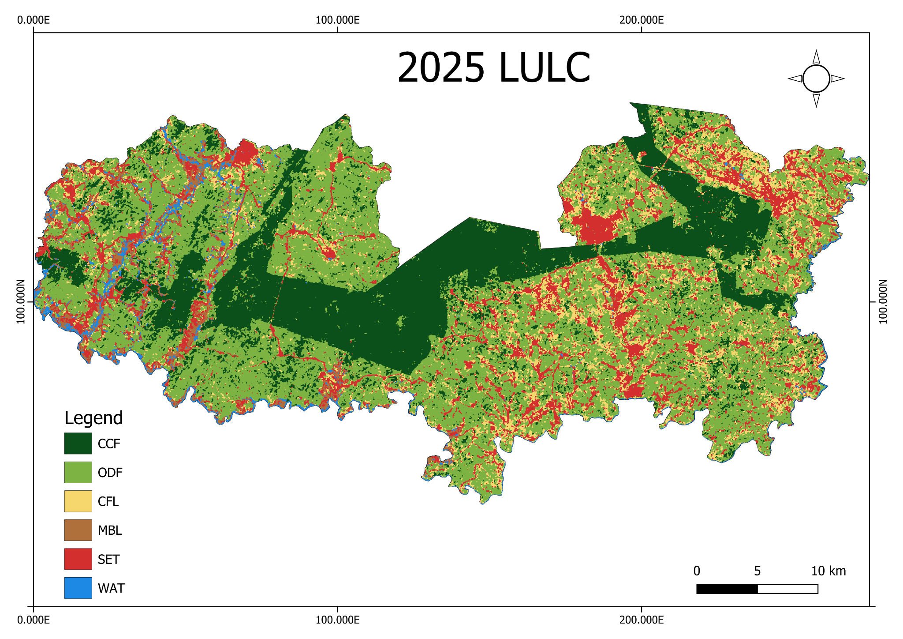

2025 Land Use/Land Cover Classification — Adansi South District

Project overview
This Google Earth Engine (GEE) workflow maps land use and land cover (LULC) in Adansi South District, Ghana, for 2025. It uses Landsat 8 and Landsat 9 imagery and a Random Forest classifier to distinguish six land-cover classes.
The workflow is designed with two operating modes: a sample-picking mode for exploring predictor layers and potential training locations, and a classification mode for combining samples, training the model, producing the classified map, and exporting outputs.
Land-cover classes
| Code | Class | Description |
|---|---|---|
| 0 | CCF | Closed forest |
| 1 | ODF | Open / degraded forest |
| 2 | CFL | Cropland and fallow |
| 3 | MBL | Mining / bare land |
| 4 | SET | Built-up |
| 5 | WAT | Water |
Imagery and predictor features
The script uses Landsat 8 and 9 surface-reflectance imagery. Its predictor stack is designed to combine spectral information and derived features, including dry-season bands, spectral indices, a yearly NDVI profile, and texture information. The script's comments and settings describe a dry-season composite spanning November 2024 to February 2025.
Workflow
- Define or import the Adansi South District boundary (
aoi). - Prepare Landsat 8 and 9 imagery, including compositing and gap filling.
- Derive spectral indices and additional predictor features.
- In sample-picking mode, inspect predictor layers and potential sample locations for each class.
- Load training samples either from an uploaded table or from six class-specific sample layers.
- Train a Random Forest classifier and classify the study area.
- Generate class-area summaries and export the mapped results.
Running the script
Open the JavaScript file in the Google Earth Engine Code Editor.
The script expects an imported district boundary named aoi. Depending on the selected sample workflow, it also expects either an uploaded table named samples with a numeric class field (values 0–5), or six sample layers named CCF, ODF, CFL, MBL, SET, and WAT.
The main settings at the beginning of the script control the workflow:
PICKING: set totrueto inspect predictor layers and potential sample locations; set tofalseto run classification and exports.USE_UPLOADED_TABLE: choose the uploaded sample table (true) or six separately imported/drawn class layers (false).SAMPLE_GEOMETRY: specify whether uploaded samples are points or polygons.POINTS_PER_POLYGON: number of random points generated within each training polygon.STARTandEND: date range used for the dry-season composite.
Check all imports and settings before running. The script's source comments provide further instructions for preparing the samples.
Map interpretation
The supplied map shows the spatial distribution of the six classes across the district. Closed forest (CCF) is represented in dark green, open/degraded forest (ODF) in light green, cropland and fallow (CFL) in yellow, mining/bare land (MBL) in brown, built-up areas (SET) in red, and water (WAT) in blue.
Accuracy assessment and limitations
A classified map should not be treated as validated solely because it has been generated successfully. Before using the map in a report or decision-making process, review the script's accuracy-assessment outputs and document the sampling design, training/validation split, class-specific producer's and user's accuracies, overall accuracy, and any imbalance among classes.
Also consider:
- Whether training and validation samples are independent and spatially representative.
- Whether the dry-season image window is suitable for distinguishing seasonal cropland, fallow, and vegetation.
- Whether mining/bare land and built-up areas are spectrally separable at the chosen spatial resolution.
- Whether cloud, shadow, and image-gap handling leave artefacts in the composite.
- Whether the map boundary, class definitions, and reference labels are appropriate for Adansi South District.
JavaScript source
The complete script is available below and as a separate file for use in the GEE Code Editor.
//==================================================
// LULC 2025 - ADANSI SOUTH DISTRICT, GHANA
// Landsat 8 + 9 | Random Forest | 6 classes (values 0 to 5)
// Features: dry-season bands + indices + yearly NDVI profile + texture
//
// Built like the 2015 script: same compositing (with gap filling), same
// potential-site picking aid, same classification and area table.
//
// TWO MODES (see PICKING in Settings)
// PICKING = true : shows the bands, indices and extra features as map
// layers, plus POTENTIAL SITES for every class and
// suggested points, to make picking the samples easy.
// PICKING = false : merges the samples, classifies and exports.
//
// IMPORTS NEEDED (create in the Code Editor, in THIS script)
// aoi : district boundary (table asset)
//
// SAMPLES: use ONE of the two options below
// A) Uploaded table (from Google Earth Pro) -> USE_UPLOADED_TABLE = true
// Import the asset and name it "samples".
// It needs a numeric field "class" (0 to 5). Points or polygons.
// B) Six layers drawn in GEE -> USE_UPLOADED_TABLE = false
// Name the layers CCF, ODF, CFL, MBL, SET, WAT.
// Import them as FeatureCollection (gear icon -> Import as), or
// as multi-point geometries (the script converts those).
//
// CLASS VALUES
// 0 = CCF Closed forest
// 1 = ODF Open / degraded forest
// 2 = CFL Cropland and fallow
// 3 = MBL Mining / bare land
// 4 = SET Built-up
// 5 = WAT Water
//==================================================
//==================================================
// Settings
//==================================================
var PICKING = false; // true = picking layers + potential sites, false = run classification
var USE_UPLOADED_TABLE = false; // true = table "samples", false = six layers
var SAMPLE_GEOMETRY = "points"; // "points" or "polygons" (for the sample table)
var POINTS_PER_POLYGON = 15; // random points made inside each polygon
var START = "2024-11-01"; // dry season composite: Nov 2024 - Feb 2025
var END = "2025-03-01";
var ADD_NEXT_SEASON = false; // true = also use Nov 2025 - Feb 2026 scenes (fills gaps)
var NEXT_START = "2025-11-01";
var NEXT_END = "2026-03-01";
var PHENO_START = "2024-11-01"; // 12 months used for the yearly NDVI profile
var PHENO_END = "2025-11-01";
var USE_L8 = true; // Landsat 8 scenes
var USE_L9 = true; // Landsat 9 scenes (available since 2021)
var FILL_GAPS = true; // fill cloud gaps from a 12-month composite + neighbours
var N_TREES = 200;
var TRAIN_FRACTION = 0.7; // 70 % train / 30 % test
var MIN_DISTANCE = 100; // metres between test and train points (points only)
var CRS = "EPSG:32630"; // UTM zone 30N
// After the first run, put weak bands from "Variable importance" here
// to drop them, for example ["EVI", "NDWI"]
var DROP_BANDS = [];
// class names (used in the legend and the area table)
var classNames = [
"0 Closed forest",
"1 Open / degraded forest",
"2 Cropland and fallow",
"3 Mining / bare land",
"4 Built-up",
"5 Water",
];
var PALETTE = ["0b4f1a", "7cb342", "f5d76e", "b0703c", "d32f2f", "1e88e5"];
var classCodes = ["CCF", "ODF", "CFL", "MBL", "SET", "WAT"];
//--------------------------------------------------
// Potential-site settings (picking aid, PICKING = true)
// The thresholds are STARTING VALUES. Click known places with the Inspector
// and adjust them. The console prints the area of each potential class:
// 0 ha = rule too strict, very large = rule too loose.
//--------------------------------------------------
var EPOCH = 2025; // used for the Hansen forest-loss cut-off year
// (the Hansen dataset used here ends in 2023, so for 2025
// it flags every loss up to 2023)
var USE_WORLDCOVER = true; // use ESA WorldCover (2020) for cropland and built-up
// (2020 map: new farms and buildings since then are missed)
var N_SUGGEST = 200; // suggested points per class
var EXPORT_SUGGESTIONS = true; // export suggested points as KML (Google Earth Pro)
//
// ONE SIMPLE RULE PER CLASS (all conditions must hold)
// 0 CCF NDVI > 0.65, NDMI > 0.25, smooth texture, Hansen tree cover >= 70 %
// 1 ODF NDVI 0.40-0.70, NDMI 0.10-0.30, Hansen tree cover >= 30 %
// 2 CFL NDVI 0.20-0.60, not bare (BSI < 0.1), not wet (MNDWI < 0),
// some seasonal change, and (WorldCover cropland OR clearly non-forest)
// 3 MBL BSI > 0.1, NDVI < 0.25, MNDWI < 0.1, not a settlement
// + muddy ponds (MNDWI > 0, RED > GREEN, not permanent water)
// 4 SET WorldCover built-up share >= 30 % of the cell, NDVI < 0.45
// 5 WAT MNDWI > 0, NDVI < 0.15, and not a muddy mining pond
//
var MIN_CLASS_HA = 40; // warn if a potential class is smaller than this
// erode = keep only the core of each patch (3 x 3 pixels = 90 m).
// Only forests are eroded: rivers, fields, mines and settlements are too small.
var ERODE = { ccf: true, odf: true, cfl: false, mbl: false, set: false, wat: false };
var T = {
ccf: { ndvi: 0.65, ndmi: 0.25, std: 0.06, p10: 0.45, cover: 70 },
odf: { ndviMin: 0.4, ndviMax: 0.7, ndmiMin: 0.1, ndmiMax: 0.3, cover: 30 },
cfl: { ndviMin: 0.2, ndviMax: 0.6, bsiMax: 0.1, range: 0.15, rangeStrong: 0.25,
coverMax: 30, wcFrac: 0.5 },
mbl: { bsi: 0.1, ndviMax: 0.25, mndwiMax: 0.1 },
pond: { mndwi: 0.0, ndti: 0.0, gswMax: 50, ndviMax: 0.15 }, // muddy, non-permanent water
set: { ndbi: 0.0, ndviMax: 0.45, wcFrac: 0.3 },
wat: { mndwi: 0.0, ndviMax: 0.15 },
};
// visualization parameters for the composite
var rgb_viz = { bands: ["RED", "GREEN", "BLUE"], min: 0.02, max: 0.25 };
//==================================================
// Landsat imagery filter
//==================================================
var l8 = ee.ImageCollection("LANDSAT/LC08/C02/T1_L2");
var l9 = ee.ImageCollection("LANDSAT/LC09/C02/T1_L2");
var landsat = USE_L8 && USE_L9 ? l8.merge(l9) : USE_L9 ? l9 : l8;
var dateFilter = ADD_NEXT_SEASON
? ee.Filter.or(
ee.Filter.date(START, END),
ee.Filter.date(NEXT_START, NEXT_END)
)
: ee.Filter.date(START, END);
//dataset filter (dry season)
var scenes = landsat
.filter(dateFilter)
// Optional: pre-filter to get less cloudy scenes.
// .filter(ee.Filter.lt("CLOUD_COVER", 50))
.filterBounds(aoi);
print("Scenes used (dry season)", scenes.size());
scenes.size().evaluate(function (n) {
if (n === 0) {
print("NO SCENES FOUND: check START/END, USE_L8 and USE_L9.");
}
});
// cloud-masked, scaled scenes
var yearScenes = landsat.filterDate(PHENO_START, PHENO_END).filterBounds(aoi);
var dryMasked = scenes.map(maskLandsatClouds);
var yearMasked = yearScenes.map(maskLandsatClouds);
var dryRaw = dryMasked.median(); // may have gaps (cloud in every scene)
var validFrac = function (img) {
return img
.select("SR_B4")
.mask()
.reduceRegion({
reducer: ee.Reducer.mean(),
geometry: aoi.geometry(),
scale: 30,
maxPixels: 1e13,
})
.get("SR_B4");
};
print("Valid-pixel fraction, dry season BEFORE filling", validFrac(dryRaw));
var filled = dryRaw;
if (FILL_GAPS) {
// fill 1: use the 12-month composite where the dry season has a gap
// fill 2: fill small remaining holes from their neighbours
filled = dryRaw.unmask(yearMasked.median()).reproject({ crs: CRS, scale: 30 });
filled = filled.unmask(
filled.focalMedian({ radius: 3, units: "pixels", kernelType: "square" })
);
}
filled = filled.clip(aoi);
print("Valid-pixel fraction AFTER filling", validFrac(filled));
var imagery = selectBands(filled);
//==================================================
// Extra features: yearly NDVI profile and texture
//==================================================
// NDVI low / median / high over 12 months separates crops (strong seasonal
// change) from forest (stable) better than the dry season alone.
var yearCol = yearMasked.map(function (img) {
return img.normalizedDifference(["SR_B5", "SR_B4"]).rename("NDVI");
});
print("Scenes used (yearly profile)", yearCol.size());
var ndviP = yearCol.reduce(ee.Reducer.percentile([10, 50, 90]));
var ndviRange = ndviP
.select("NDVI_p90")
.subtract(ndviP.select("NDVI_p10"))
.rename("NDVI_range");
// Texture: local variation of NDVI (forest is smooth, farms are patchy)
var ndviStd = imagery
.select("NDVI")
.reduceNeighborhood({
reducer: ee.Reducer.stdDev(),
kernel: ee.Kernel.square(1),
})
.rename("NDVI_std");
imagery = imagery
.addBands([ndviP, ndviRange, ndviStd])
.reproject({ crs: CRS, scale: 30 })
.clip(aoi);
var inputBands = imagery.bandNames().removeAll(DROP_BANDS);
print("Bands used", inputBands);
// visualize imagery
Map.centerObject(aoi, 11);
Map.addLayer(imagery, rgb_viz, "True colour (B4, B3, B2)", true);
Map.addLayer(
dryRaw.select("SR_B4").mask().not().selfMask().clip(aoi),
{ palette: ["ff00ff"] },
"Dry-season gaps that were filled",
false
);
//==================================================
// Layers for picking points (PICKING = true)
// Turn them on and off in the Layers menu (top right of the map).
// Use the Inspector tab to read the values at a clicked point.
//==================================================
if (PICKING) {
Map.setOptions("SATELLITE"); // high-resolution basemap to compare with
// show the uploaded samples to check them
if (USE_UPLOADED_TABLE) {
Map.addLayer(samples, { color: "ff00ff" }, "samples (uploaded)", false);
}
// colour composites
Map.addLayer(
imagery,
{ bands: ["SWIR1", "NIR", "RED"], min: 0.02, max: 0.4 },
"False colour (B6, B5, B4)",
false
);
Map.addLayer(
imagery,
{ bands: ["NIR", "RED", "GREEN"], min: 0.02, max: 0.45 },
"Vegetation colour (B5, B4, B3)",
false
);
// single bands in grey: [band, layer name, max reflectance]
var bandLayers = [
["BLUE", "B2 Blue", 0.15],
["GREEN", "B3 Green", 0.2],
["RED", "B4 Red", 0.25],
["NIR", "B5 NIR", 0.5],
["SWIR1", "B6 SWIR1", 0.4],
["SWIR2", "B7 SWIR2", 0.3],
];
bandLayers.forEach(function (b) {
Map.addLayer(
imagery.select(b[0]),
{ min: 0, max: b[2], palette: ["000000", "ffffff"] },
b[1],
false
);
});
// palettes
var vegPal = ["d73027", "fee08b", "1a9850"];
var waterPal = ["8c510a", "f5f5f5", "2166ac"];
var builtPal = ["2166ac", "f5f5f5", "b2182b"];
var soilPal = ["1a9850", "fee08b", "8c510a"];
var moistPal = ["8c510a", "f5f5f5", "01665e"];
var greyPal = ["ffffff", "000000"];
// indices and extra features: [band, min, max, palette]
var indexLayers = [
["NDVI", -0.2, 0.9, vegPal],
["EVI", 0, 1, vegPal],
["NDMI", -0.3, 0.5, moistPal],
["NBR", -0.2, 0.8, vegPal],
["NDWI", -0.6, 0.6, waterPal],
["MNDWI", -0.6, 0.6, waterPal],
["NDBI", -0.5, 0.3, builtPal],
["BSI", -0.4, 0.3, soilPal],
["slope", 0, 20, greyPal],
["NDVI_p10", -0.2, 0.8, vegPal],
["NDVI_p50", -0.2, 0.9, vegPal],
["NDVI_p90", -0.2, 0.9, vegPal],
["NDVI_range", 0, 0.6, greyPal],
["NDVI_std", 0, 0.15, greyPal],
];
indexLayers.forEach(function (x) {
Map.addLayer(
imagery.select(x[0]),
{ min: x[1], max: x[2], palette: x[3] },
x[0],
false
);
});
//==================================================
// POTENTIAL SITES FOR EACH CLASS (picking aid)
// Rule-based "likely" areas. They are only suggestions: confirm each
// place on the satellite basemap before you place a point.
//==================================================
var yy = EPOCH - 2000; // Hansen loss-year code of the epoch (2025 -> 25)
var gfc = ee.Image("UMD/hansen/global_forest_change_2023_v1_11");
var cover = gfc.select("treecover2000");
var lossYear = gfc.select("lossyear");
var notLostYet = lossYear.eq(0).or(lossYear.gt(yy)); // forest still standing
var lostByEpoch = lossYear.gte(1).and(lossYear.lte(yy)); // cleared before the epoch
var wc = ee.ImageCollection("ESA/WorldCover/v100").first().select("Map");
var gsw = ee.Image("JRC/GSW1_4/GlobalSurfaceWater")
.select("occurrence")
.unmask(0);
var band = function (name) {
return imagery.select(name);
};
// share of each 30 m cell covered by a WorldCover class (10 m map, 2020)
var wcFrac = function (code) {
return wc
.eq(code)
.reduceResolution({ reducer: ee.Reducer.mean(), maxPixels: 1024 })
.reproject({ crs: CRS, scale: 30 });
};
var wcCrop = wcFrac(40);
var wcBuilt = wcFrac(50);
// turbidity: muddy water has RED >= GREEN
var ndti = band("RED")
.subtract(band("GREEN"))
.divide(band("RED").add(band("GREEN")));
// 0 Closed forest
var ccfRaw = band("NDVI").gt(T.ccf.ndvi)
.and(band("NDMI").gt(T.ccf.ndmi))
.and(band("NDVI_std").lt(T.ccf.std))
.and(band("NDVI_p10").gt(T.ccf.p10))
.and(cover.gte(T.ccf.cover))
.and(notLostYet);
// 1 Open / degraded forest
var odfRaw = band("NDVI").gte(T.odf.ndviMin)
.and(band("NDVI").lte(T.odf.ndviMax))
.and(band("NDMI").gte(T.odf.ndmiMin))
.and(band("NDMI").lte(T.odf.ndmiMax))
.and(cover.gte(T.odf.cover))
.and(lostByEpoch.not());
// 2 Cropland and fallow: green but not forest, not bare, not wet,
// with some seasonal change; supported by WorldCover cropland or by a
// strong seasonal change outside forest
var cflSupport = band("NDVI_range").gt(T.cfl.rangeStrong)
.and(cover.lt(T.cfl.coverMax).or(lostByEpoch));
if (USE_WORLDCOVER) {
cflSupport = cflSupport.or(wcCrop.gte(T.cfl.wcFrac));
}
var cflRaw = band("NDVI").gte(T.cfl.ndviMin)
.and(band("NDVI").lte(T.cfl.ndviMax))
.and(band("BSI").lt(T.cfl.bsiMax))
.and(band("MNDWI").lt(0))
.and(band("NDVI_range").gt(T.cfl.range))
.and(cflSupport);
// 3 Mining / bare land: bare spoil, plus muddy non-permanent ponds
var spoil = band("BSI").gt(T.mbl.bsi)
.and(band("NDVI").lt(T.mbl.ndviMax))
.and(band("MNDWI").lt(T.mbl.mndwiMax));
if (USE_WORLDCOVER) {
spoil = spoil.and(wcBuilt.lt(T.set.wcFrac)); // keep settlements out of mining
}
var pond = band("MNDWI").gt(T.pond.mndwi)
.and(ndti.gt(T.pond.ndti))
.and(gsw.lt(T.pond.gswMax))
.and(band("NDVI").lt(T.pond.ndviMax));
var mblRaw = spoil.or(pond);
// 4 Built-up: WorldCover built-up share of the cell, little vegetation.
// Without WorldCover: high NDBI, little vegetation, not bare spoil.
var setRaw = USE_WORLDCOVER
? wcBuilt.gte(T.set.wcFrac).and(band("NDVI").lt(T.set.ndviMax))
: band("NDBI").gt(T.set.ndbi)
.and(band("NDVI").lt(T.set.ndviMax))
.and(band("BSI").lt(T.mbl.bsi))
.and(band("MNDWI").lt(0));
// 5 Water: open water that is not a muddy mining pond
var watRaw = band("MNDWI").gt(T.wat.mndwi)
.and(band("NDVI").lt(T.wat.ndviMax))
.and(pond.not());
// keep the core of each patch (3 x 3 pixels) where requested
var core = function (raw, erode) {
raw = raw.reproject({ crs: CRS, scale: 30 });
return erode
? raw.focalMin({ radius: 1, units: "pixels", kernelType: "square" })
: raw;
};
// one image of potential classes (later entries are drawn on top, so the
// small classes win over the forests where rules overlap)
var parts = [
[1, core(odfRaw, ERODE.odf)],
[2, core(cflRaw, ERODE.cfl)],
[0, core(ccfRaw, ERODE.ccf)],
[4, core(setRaw, ERODE.set)],
[3, core(mblRaw, ERODE.mbl)],
[5, core(watRaw, ERODE.wat)],
];
var cand = ee
.ImageCollection(
parts.map(function (p) {
return ee.Image(p[0]).updateMask(p[1]).rename("class").toByte();
})
)
.mosaic();
Map.addLayer(
cand,
{ min: 0, max: 5, palette: PALETTE },
"Potential sites (all classes)",
true
);
for (var v = 0; v < 6; v++) {
Map.addLayer(
cand.updateMask(cand.eq(v)),
{ palette: [PALETTE[v]] },
"Potential: " + classNames[v],
false
);
}
// ---- Simple helper layers (one rule each), to pick points quickly ----
// They also catch look-alikes, so confirm each spot on the satellite basemap.
// Mining / bare land: bare, non-green, not water, not a settlement
Map.addLayer(
spoil.selfMask(),
{ palette: ["ff00ff"] },
"Mining candidates (check on satellite)",
false
);
// Farmland: moderately green, not bare, not wet, seasonal change, gentle
// slope, and not forest
var farmCandidate = band("NDVI").gte(T.cfl.ndviMin)
.and(band("NDVI").lte(T.cfl.ndviMax))
.and(band("BSI").lt(T.cfl.bsiMax))
.and(band("MNDWI").lt(0))
.and(band("NDVI_range").gt(T.cfl.range))
.and(band("slope").lt(15))
.and(cover.lt(50).or(lostByEpoch));
Map.addLayer(
farmCandidate.selfMask(),
{ palette: ["ffa500"] },
"Farmland candidates (check on satellite)",
false
);
// Stronger farmland: the rule above AND WorldCover cropland covers at
// least half of the 30 m cell
var farmStrong = farmCandidate.and(wcCrop.gte(T.cfl.wcFrac));
Map.addLayer(
farmStrong.selfMask(),
{ palette: ["ff0000"] },
"Farmland candidates, strong (WorldCover cropland)",
false
);
// Fallow / regrowth: forest cleared earlier and now medium green
var fallowCandidate = band("NDVI").gte(0.3)
.and(band("NDVI").lte(0.65))
.and(band("BSI").lt(T.cfl.bsiMax))
.and(cover.gte(30))
.and(lostByEpoch);
Map.addLayer(
fallowCandidate.selfMask(),
{ palette: ["00bcd4"] },
"Fallow / regrowth candidates (check on satellite)",
false
);
// area of each helper layer (ha): 0 = too strict, huge = too loose
print(
"Helper area (ha): mining, farm, strong, fallow",
ee.Image.cat([
spoil.rename("mining"),
farmCandidate.rename("farm"),
farmStrong.rename("strong"),
fallowCandidate.rename("fallow"),
])
.multiply(ee.Image.pixelArea().divide(10000))
.reduceRegion({
reducer: ee.Reducer.sum(),
geometry: aoi.geometry(),
scale: 30,
crs: CRS,
maxPixels: 1e13,
tileScale: 8,
})
);
// area of each potential class (check that no rule is empty or too wide)
var candArea = ee.Image.cat(
[0, 1, 2, 3, 4, 5].map(function (k) {
return cand.eq(k).rename("c" + k);
})
)
.multiply(ee.Image.pixelArea().divide(10000))
.reduceRegion({
reducer: ee.Reducer.sum(),
geometry: aoi.geometry(),
scale: 30,
crs: CRS,
maxPixels: 1e13,
tileScale: 8,
});
print("Potential-site area (ha): c0 CCF, c1 ODF, c2 CFL, c3 MBL, c4 SET, c5 WAT", candArea);
candArea.evaluate(function (d) {
[0, 1, 2, 3, 4, 5].forEach(function (k) {
var ha = d && d["c" + k] ? d["c" + k] : 0;
if (ha < MIN_CLASS_HA) {
print(
"WARNING: potential area of " + classNames[k] + " is only " + Math.round(ha) +
" ha. Relax its rule in T (Settings)."
);
}
});
});
// suggested points inside the potential sites
var nPts = [N_SUGGEST, N_SUGGEST, N_SUGGEST, N_SUGGEST, N_SUGGEST, N_SUGGEST];
var suggest = cand.stratifiedSample({
numPoints: 0,
classBand: "class",
region: aoi.geometry(),
scale: 30,
projection: ee.Projection(CRS),
seed: 7,
classValues: [0, 1, 2, 3, 4, 5],
classPoints: nPts,
geometries: true,
tileScale: 4,
});
print("Suggested points per class", suggest.aggregate_histogram("class"));
for (var w = 0; w < 6; w++) {
Map.addLayer(
suggest.filter(ee.Filter.eq("class", w)),
{ color: PALETTE[w] },
"Suggested points: " + classNames[w],
false
);
if (EXPORT_SUGGESTIONS) {
Export.table.toDrive({
collection: suggest.filter(ee.Filter.eq("class", w)),
description: "Suggested_" + classCodes[w] + "_" + EPOCH,
folder: "LULC",
fileFormat: "KML",
});
}
}
print(
"PICKING mode: use the Potential sites layers to place your points, " +
"then set PICKING = false to classify."
);
}
//==================================================
// Classification (PICKING = false)
//==================================================
if (!PICKING) {
//===================================================
// Machine Learning Model
//===================================================
//class layers: from the uploaded table, or from the six drawn layers
var layers = USE_UPLOADED_TABLE
? [0, 1, 2, 3, 4, 5].map(function (v) {
return samples.filter(ee.Filter.eq("class", v));
})
: [CCF, ODF, CFL, MBL, SET, WAT];
//merge samples (each layer gets its class value 0 to 5)
var sample = setClass(layers[0], 0)
.merge(setClass(layers[1], 1))
.merge(setClass(layers[2], 2))
.merge(setClass(layers[3], 3))
.merge(setClass(layers[4], 4))
.merge(setClass(layers[5], 5));
print("Samples per class (all)", sample.aggregate_histogram("class"));
// split train and test (70 / 30)
var train = sample.filter(ee.Filter.lte("random", TRAIN_FRACTION));
var test = sample.filter(ee.Filter.gt("random", TRAIN_FRACTION));
if (SAMPLE_GEOMETRY === "polygons" && USE_UPLOADED_TABLE) {
// the split is by polygon, so train and test never share a polygon;
// then random points are made inside each polygon
train = polygonsToPoints(train);
test = polygonsToPoints(test);
} else {
// remove test points closer than 100 m to any training point
var near = ee.Filter.withinDistance({
distance: MIN_DISTANCE,
leftField: ".geo",
rightField: ".geo",
maxError: 1,
});
test = ee.FeatureCollection(ee.Join.inverted().apply(test, train, near));
}
print("Training points per class", train.aggregate_histogram("class"));
print("Test points per class", test.aggregate_histogram("class"));
// Extract image values
var trainSample = imagery.select(inputBands).sampleRegions({
collection: train,
scale: 30,
properties: ["class"],
tileScale: 4,
});
var testSample = imagery.select(inputBands).sampleRegions({
collection: test,
scale: 30,
properties: ["class"],
tileScale: 4,
});
// Legend dict
var legendInfo = {
LULC_class_values: [0, 1, 2, 3, 4, 5],
LULC_class_palette: PALETTE,
};
// Train rf model
var rf_model = ee.Classifier.smileRandomForest({
numberOfTrees: N_TREES,
seed: 42,
}).train({
features: trainSample,
classProperty: "class",
inputProperties: inputBands,
});
// Which bands matter most
print(
"Variable importance",
ee.Dictionary(rf_model.explain()).get("importance")
);
// Training accuracy: compare with the test accuracy below.
// Training much higher than test = memorising (mixed / near-duplicate points).
var trainCM = trainSample
.classify(rf_model, "predict")
.errorMatrix("class", "predict", [0, 1, 2, 3, 4, 5]);
print("Training accuracy", trainCM.accuracy());
// Accuracy test
var cm = testSample
.classify(rf_model, "predict")
.errorMatrix("class", "predict", [0, 1, 2, 3, 4, 5]);
print("Confusion matrix", cm, "Accuracy", cm.accuracy(), "Kappa", cm.kappa());
print("Producer accuracy", cm.producersAccuracy());
print("User accuracy", cm.consumersAccuracy());
//==================================================
// Misclassified test points (where the confusion is)
// Colour of each point = its TRUE class (same colours as the legend).
// Click a point with the Inspector: "class" = true class, "predict" = predicted.
//==================================================
var testPred = imagery
.select(inputBands)
.sampleRegions({
collection: test,
scale: 30,
properties: ["class"],
geometries: true,
tileScale: 4,
})
.classify(rf_model, "predict");
var wrong = testPred
.map(function (f) {
return f.set(
"wrong",
ee.Number(f.get("class")).neq(ee.Number(f.get("predict")))
);
})
.filter(ee.Filter.eq("wrong", 1));
var wrongStyled = wrong.map(function (f) {
var color = ee.List(legendInfo.LULC_class_palette).get(
ee.Number(f.get("class")).int()
);
return f.set(
"style",
ee.Dictionary({ color: color, pointSize: 7, pointShape: "circle" })
);
});
Map.addLayer(
wrongStyled.style({ styleProperty: "style" }),
{},
"Misclassified test points (colour = true class)",
true
);
print("Number of misclassified test points", wrong.size());
print("Misclassified points (class = true, predict = predicted)", wrong.limit(50));
// Export the wrong points to check them in ArcGIS / Google Earth
Export.table.toDrive({
collection: wrong,
description: "Misclassified_points_2025",
folder: "LULC",
fileFormat: "SHP",
});
// Classify, then 3 x 3 majority filter to remove isolated pixels
var lulc = imagery
.select(inputBands)
.classify(rf_model, "LULC")
.focalMode({ radius: 1, units: "pixels", kernelType: "square" })
.toByte()
.clip(aoi)
.set(legendInfo);
Map.addLayer(lulc, {}, "lulc", true);
// Area per class (ha). Every class 0 to 5 is listed, with 0 ha if the
// class has no pixels, so a missing class (for example mining) is visible.
var classMasks = ee.Image.cat(
[0, 1, 2, 3, 4, 5].map(function (v) {
return lulc.eq(v).rename("c" + v);
})
);
var areaDict = classMasks
.multiply(ee.Image.pixelArea().divide(10000))
.reduceRegion({
reducer: ee.Reducer.sum(),
geometry: aoi.geometry(),
scale: 30,
crs: CRS,
maxPixels: 1e13,
tileScale: 8,
});
var areaRaw = ee.FeatureCollection(
[0, 1, 2, 3, 4, 5].map(function (v) {
return ee.Feature(null, {
class_value: v,
class_name: classNames[v],
area_ha: areaDict.get("c" + v),
});
})
);
var totalHa = ee.Number(areaRaw.aggregate_sum("area_ha"));
var areaTable = areaRaw.map(function (f) {
return f.set(
"percent",
ee.Number(f.get("area_ha")).divide(totalHa).multiply(100)
);
});
print("Area per class (ha and %)", areaTable);
print("Total mapped area (ha)", totalHa);
print(
ui.Chart.feature
.byFeature(areaTable, "class_name", "area_ha")
.setChartType("ColumnChart")
.setOptions({
title: "Area per class (ha), 2025",
legend: { position: "none" },
hAxis: { title: "Class" },
vAxis: { title: "Hectares" },
})
);
// The CSV export runs as a task, so it works even if the console is slow
Export.table.toDrive({
collection: areaTable,
description: "LULC_2025_area_per_class",
folder: "LULC",
fileFormat: "CSV",
});
//==================================================
// Legend
//==================================================
// set position of panel
var legend = ui.Panel({
style: {
position: "bottom-left",
padding: "8px 15px",
},
});
// Create legend title
var legendTitle = ui.Label({
value: "LULC 2025",
style: {
fontWeight: "bold",
fontSize: "18px",
margin: "0 0 4px 0",
padding: "0",
},
});
// Add the title to the panel
legend.add(legendTitle);
// Creates and styles 1 row of the legend.
var makeRow = function (color, name) {
// Create the label that is actually the colored box.
var colorBox = ui.Label({
style: {
backgroundColor: "#" + color,
// Use padding to give the box height and width.
padding: "8px",
margin: "0 0 4px 0",
},
});
// Create the label filled with the description text.
var description = ui.Label({
value: name,
style: { margin: "0 0 4px 6px" },
});
// return the panel
return ui.Panel({
widgets: [colorBox, description],
layout: ui.Panel.Layout.Flow("horizontal"),
});
};
// Palette with the colors
var palette = legendInfo.LULC_class_palette;
// Add color and names
for (var i = 0; i < classNames.length; i++) {
legend.add(makeRow(palette[i], classNames[i]));
}
// add legend to map (alternatively you can also print the legend to the console)
Map.add(legend);
// Export lulc to google drive
Export.image.toDrive({
image: lulc,
scale: 30,
region: aoi.geometry(),
crs: CRS,
maxPixels: 1e13,
folder: "LULC",
description: "LULC_2025_AdansiSouth",
formatOptions: {
cloudOptimized: true,
},
});
}
//==================================================
// Filter Cloud Landsat 8 / 9
//==================================================
function maskLandsatClouds(image) {
var qa = image.select("QA_PIXEL");
// Bits 1, 2, 3 and 4 are dilated cloud, cirrus, cloud and cloud shadow.
var dilatedBitMask = 1 << 1;
var cirrusBitMask = 1 << 2;
var cloudBitMask = 1 << 3;
var shadowBitMask = 1 << 4;
// All flags should be set to zero, indicating clear conditions.
var mask = qa
.bitwiseAnd(dilatedBitMask)
.eq(0)
.and(qa.bitwiseAnd(cirrusBitMask).eq(0))
.and(qa.bitwiseAnd(cloudBitMask).eq(0))
.and(qa.bitwiseAnd(shadowBitMask).eq(0));
// Scale the surface reflectance bands (Collection 2 Level 2)
var sr = image.select("SR_B.").multiply(0.0000275).add(-0.2);
return sr.updateMask(mask);
}
//========================================================================
// function to select the required bands and add the indices and slope
//========================================================================
function selectBands(image) {
//required bands selection
var bands = ["SR_B2", "SR_B3", "SR_B4", "SR_B5", "SR_B6", "SR_B7"];
var names = ["BLUE", "GREEN", "RED", "NIR", "SWIR1", "SWIR2"];
image = image.select(bands, names);
// vegetation
var ndvi = image.normalizedDifference(["NIR", "RED"]).rename("NDVI");
var evi = image
.expression("2.5 * (NIR - RED) / (NIR + 6 * RED - 7.5 * BLUE + 1)", {
NIR: image.select("NIR"),
RED: image.select("RED"),
BLUE: image.select("BLUE"),
})
.rename("EVI");
// moisture and burn / disturbance
var ndmi = image.normalizedDifference(["NIR", "SWIR1"]).rename("NDMI");
var nbr = image.normalizedDifference(["NIR", "SWIR2"]).rename("NBR");
// water
var ndwi = image.normalizedDifference(["GREEN", "NIR"]).rename("NDWI");
var mndwi = image.normalizedDifference(["GREEN", "SWIR1"]).rename("MNDWI");
// built-up and bare soil
var ndbi = image.normalizedDifference(["SWIR1", "NIR"]).rename("NDBI");
var bsi = image
.expression(
"((SWIR1 + RED) - (NIR + BLUE)) / ((SWIR1 + RED) + (NIR + BLUE))",
{
SWIR1: image.select("SWIR1"),
RED: image.select("RED"),
NIR: image.select("NIR"),
BLUE: image.select("BLUE"),
}
)
.rename("BSI");
// terrain
var slope = ee.Terrain.slope(ee.Image("USGS/SRTMGL1_003")).rename("slope").clip(aoi);
// add the indices and slope to the image
image = image.addBands(
ee.Image([ndvi, evi, ndmi, nbr, ndwi, mndwi, ndbi, bsi, slope])
);
return image;
}
//========================================================================
// make sure a sample layer is a FeatureCollection. Layers drawn in GEE are
// imported as Geometry by default; a multi-point geometry is converted to
// one feature per point. (Polygon or single-point layers: change the
// import type to FeatureCollection with the gear icon in the Imports panel.)
//========================================================================
function toFC(x) {
if (x instanceof ee.FeatureCollection) return x;
return ee.FeatureCollection(
ee.List(ee.Geometry(x).coordinates()).map(function (c) {
return ee.Feature(ee.Geometry.Point(c));
})
);
}
//========================================================================
// function to give each sample layer its class value and a random column
// (the random column is made per class, so the 70 / 30 split is by class)
//========================================================================
function setClass(fc, value) {
return toFC(fc)
.map(function (f) {
return f.set("class", value);
})
.randomColumn("random", 42);
}
//========================================================================
// function to make random points inside each polygon (keeps the class)
//========================================================================
function polygonsToPoints(polys) {
var pts = polys.toList(polys.size()).map(function (f) {
f = ee.Feature(f);
return ee.FeatureCollection.randomPoints({
region: f.geometry(),
points: POINTS_PER_POLYGON,
seed: 42,
maxError: 1,
}).map(function (p) {
return p.set("class", f.get("class"));
});
});
return ee.FeatureCollection(pts).flatten();
}